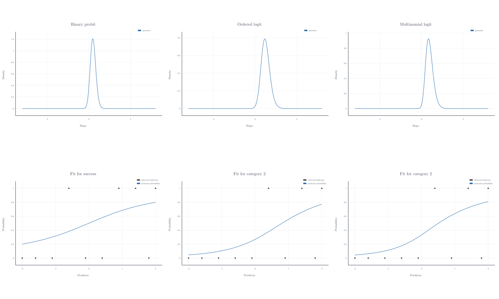

Probit, ordered logit, and multinomial logit
Abstract
Three likelihoods illustrate how to handle unordered and ordered responses. For a binary response, the probit link uses a standard Normal CDF. For three ordered categories, the ordered logit subtracts adjacent cumulative probabilities at cut points −1 and 1. For three unordered categories, a softmax normalizes category scores relative to a fixed baseline. The models share a single slope with a Normal(0, 2) prior for teaching purposes. The top row shows slope posteriors. The bottom row compares fitted probabilities with observed indicators for success or category 2.
Reproducible analysis
#include <dm/dm.hpp>
namespace b = datamunge::bayes;
using datamunge::graphics::RPlot;
int main() {
const double x[]{-2, -1.6, -1.1, -0.6, -0.1, 0.4, 0.9, 1.4, 1.8, 2};
const int binary[]{0, 0, 0, 1, 0, 0, 1, 1, 0, 1};
const int category[]{0, 0, 1, 0, 1, 2, 1, 2, 1, 2};
const auto probit = [&](std::size_t i, double beta) {
const double eta = beta * x[i];
return std::log(0.5 * std::erfc((binary[i] ? -eta : eta) / std::sqrt(2.)));
};
const auto ordered = [&](std::size_t i, double beta) {
const double eta = beta * x[i];
const double first = -1 - eta, second = 1 - eta;
if (category[i] == 0) return -b::softplus(-first);
if (category[i] == 2) return -b::softplus(second);
return first + std::log(std::expm1(2.)) - b::softplus(first) - b::softplus(second);
};
const auto multinomial = [&](std::size_t i, double beta) {
const double eta = beta * x[i];
const double scores[]{-eta, 0, eta};
return scores[category[i]] - b::log_add_exp(b::log_add_exp(-eta, 0.), eta);
};
const std::array<std::function<double(std::size_t, double)>, 3> likelihoods{probit, ordered, multinomial};
const std::array labels{"Binary probit", "Ordered logit", "Multinomial logit"};
auto plots = datamunge::graphics::RLayout::create(2, 3).size(1200, 720);
std::vector<RPlot> fit_plots;
const std::vector<double> predictor(std::begin(x), std::end(x));
for (std::size_t j = 0; j < labels.size(); ++j) {
b::LogDensity target([&](const auto& q) {
double lp = b::normal_lpdf(q[0], 0., 2.);
for (std::size_t i = 0; i < std::size(x); ++i) lp += likelihoods[j](i, q[0]);
return lp;
});
const auto post = b::grid_posterior(target, {-8}, {8}, 1000);
std::print("{} slope mean {:.3f}, SD {:.3f}.\n\n", labels[j], post.mean[0], post.sd[0]);
plots.add(RPlot::create().lines(post.marginal_grid[0], post.marginal_density[0], "posterior", {36, 105, 172})
.title(labels[j]).x_label("Slope").y_label("Density"));
const auto probability = [j](double eta) {
if (j == 0) return 0.5 * std::erfc(-eta / std::sqrt(2.));
if (j == 1) return std::exp(-b::softplus(1 - eta));
return std::exp(eta - b::log_add_exp(b::log_add_exp(-eta, 0.), eta));
};
std::vector<double> curve_x, fitted, observed;
for (std::size_t i = 0; i < std::size(x); ++i)
observed.push_back(j == 0 ? binary[i] : category[i] == 2);
for (int i = -40; i <= 40; ++i) {
const double xi = i / 20.;
double mean = 0;
for (std::size_t k = 0; k < post.marginal_grid[0].size(); ++k)
mean += probability(xi * post.marginal_grid[0][k]) * post.marginal_density[0][k] * 16 / 1000;
curve_x.push_back(xi);
fitted.push_back(mean);
}
fit_plots.push_back(RPlot::create().points(predictor, observed, "observed indicator", {70, 70, 70})
.lines(curve_x, fitted, "posterior probability", {36, 105, 172})
.title(j == 0 ? "Fit for success" : "Fit for category 2")
.x_label("Predictor").y_label("Probability"));
}
for (const auto& fit : fit_plots) plots.add(fit);
std::filesystem::create_directories("build");
plots.save_svg("build/categorical_links.svg");
}Binary probit slope mean 0.505, SD 0.336.
Ordered logit slope mean 1.241, SD 0.527.
Multinomial logit slope mean 0.958, SD 0.457.

Reference
Stan User’s Guide 2.19, sections 1.5–1.8. Stan User’s Guide 2.19 PDF